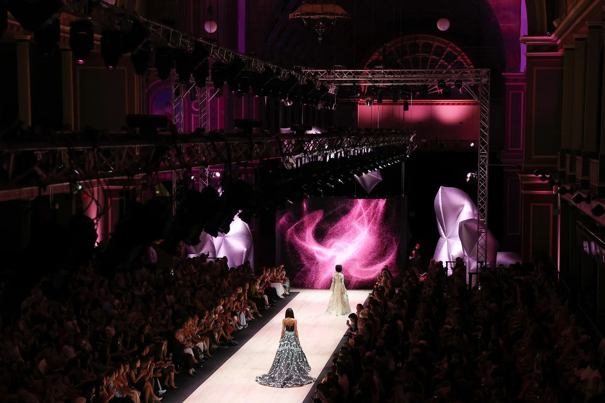
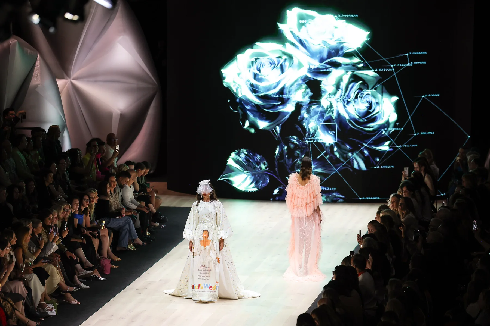
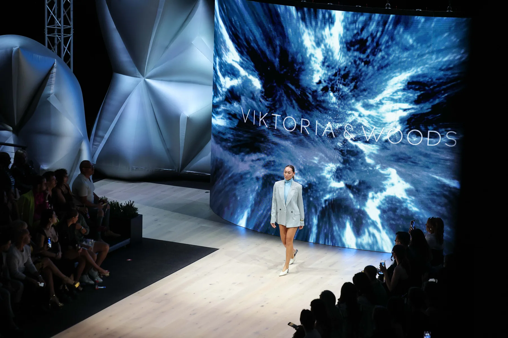
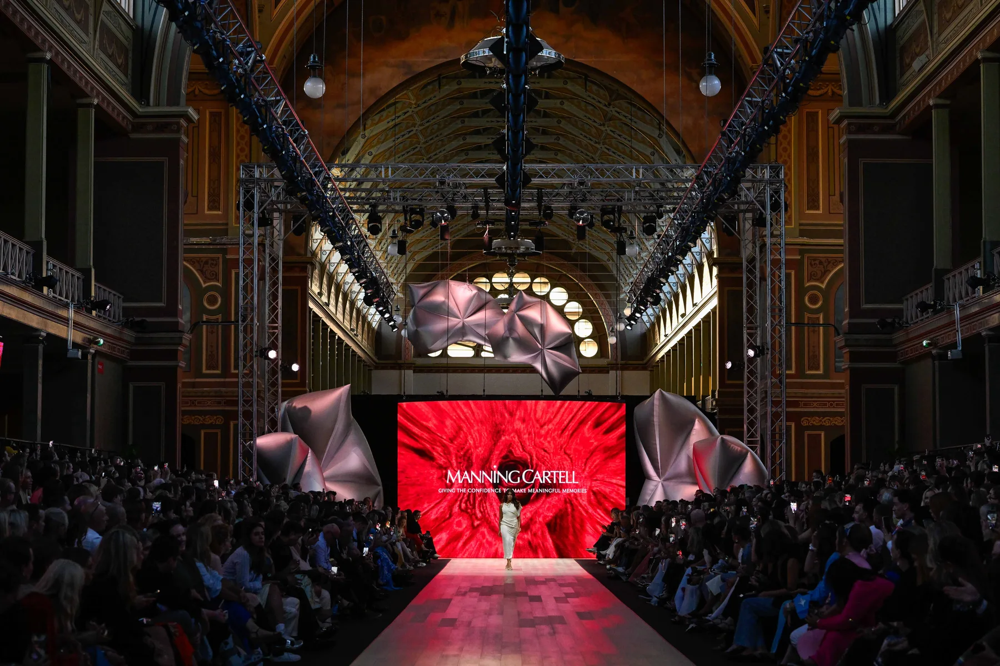
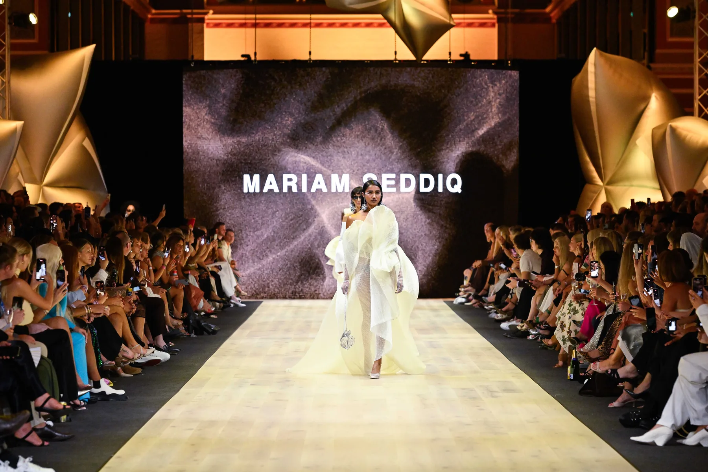
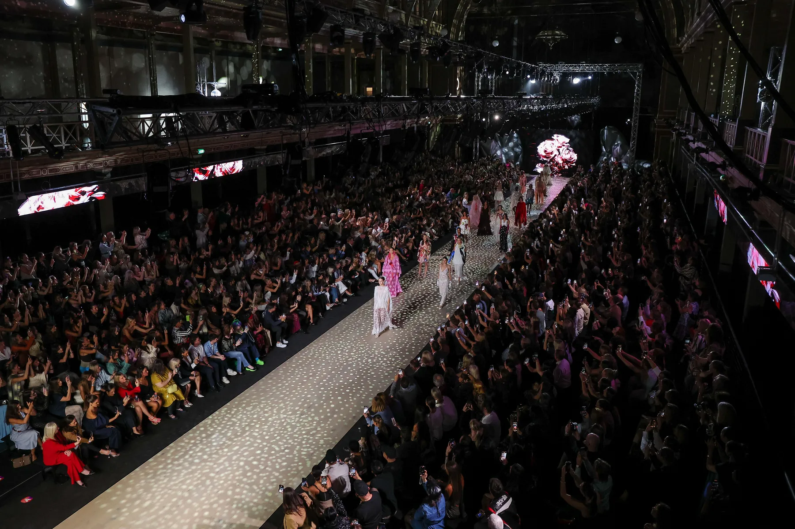

Selected Collaboration / 2025
Melbourne Fashion Festival
Meta Rose in a runway-scale screen context.

Project
Moving-image sequences from Meta Rose, adapted for festival runway screens.
For Melbourne Fashion Festival’s 2025 Premium Runways, Park translated the visual language of Meta Rose into moving image at event scale. The commission extended a body of work rooted in intimate touch into a large-scale runway environment.
Sixteen visual sequences were selected and re-rendered from the expansive Meta Rose system. Recomposed for a non-interactive setting, each could operate as an independent screen work while remaining connected through colour, texture and emotional tension.
Role
Artist / Visual direction / Moving image / Screen content




